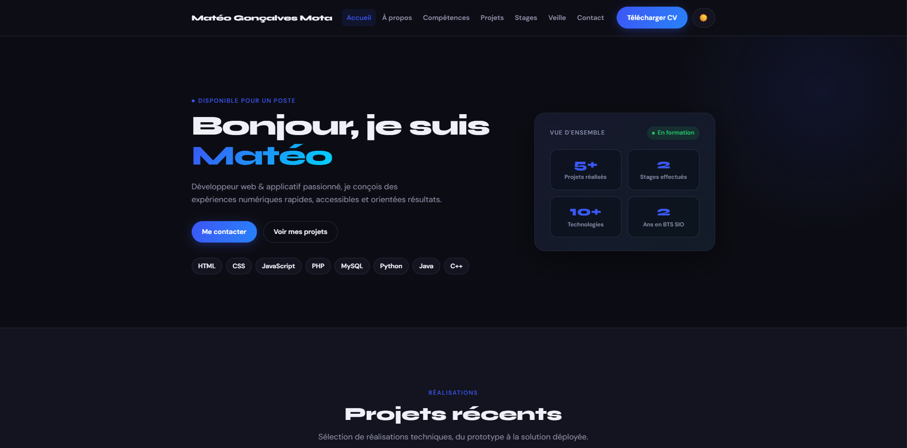

Portfolio personnel
Ce portfolio est lui-même un projet : conçu pour être performant, accessible et facile à maintenir — sans dépendances lourdes, 100% HTML/CSS/JS vanilla.
HTML5
CSS
JavaScript
SEO
Voir le projet